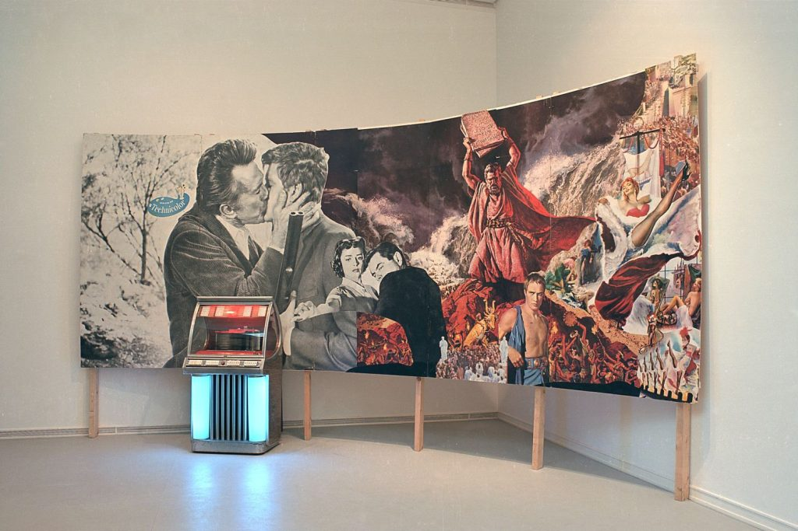
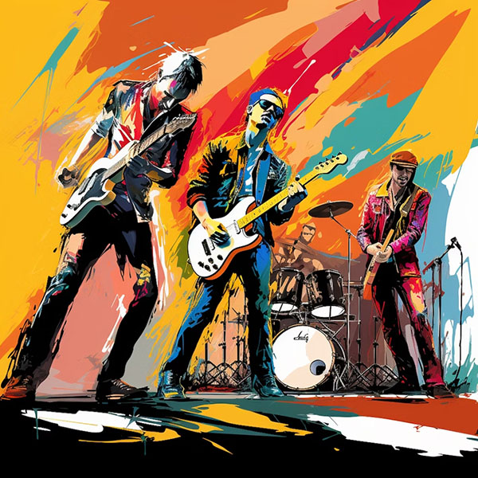
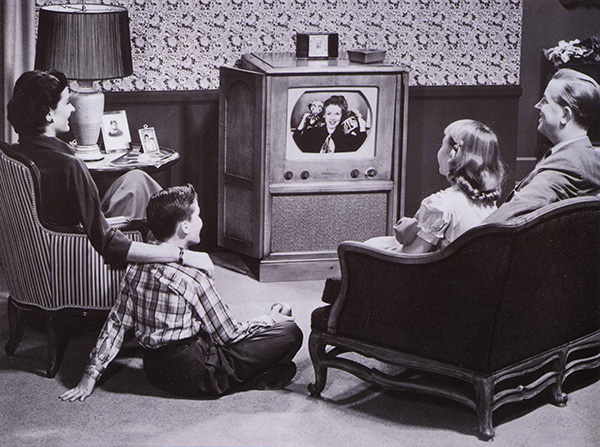
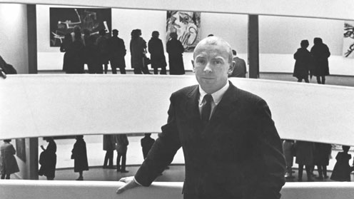
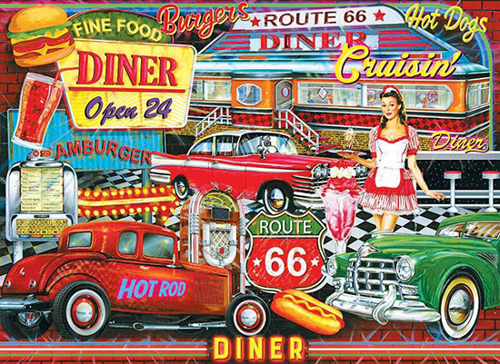
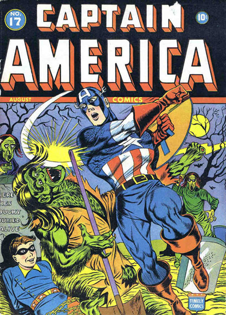

Años 50
En la década de 1950, el Pop Art comenzó a gestarse en el Reino Unido como una respuesta crítica y a la vez fascinada por la creciente cultura de consumo de la posguerra. Artistas como Richard Hamilton y Eduardo Paolozzi, miembros del Independent Group, exploraron la iconografía de la publicidad, el cine y la tecnología, sentando las bases para un movimiento que revolucionaría el mundo del arte. Sus collages y obras tempranas desafiaron la solemnidad del arte abstracto y abrieron la puerta a una nueva forma de expresión que celebraba y cuestionaba lo cotidiano.
Descubre más tocando los círculos




